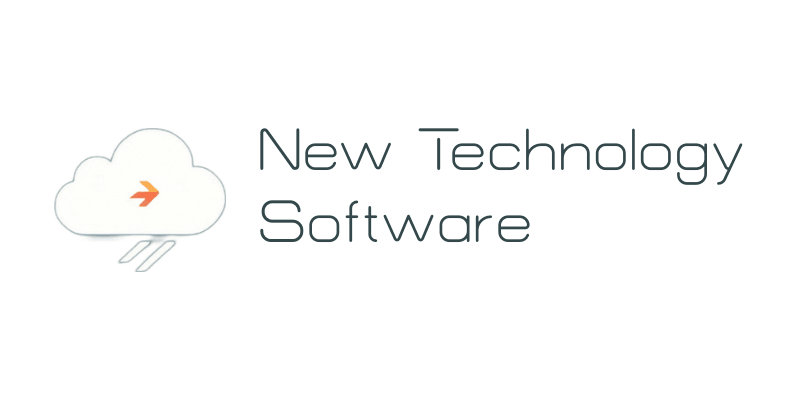

Aktualizace CyberSecure je připravena. Z důvodů ochrany a bezpečnosti ji doporučujeme provést co nejdříve. Pokud ji nyní nemůžete udělat, zavřete tuto zprávu, budete upozorněni později. Pokud chcete aktualizaci nyní provést, klikněte na tlačítko níže. V dalším kroku se dozvíte více podrobností.
Instalace aktualizací byla zrušena uživatelem.

Aktualizace byla úspěšná! Jelikož jste aplikaci CyberSecure aktualizovali na verzi 13.0, je nutné provést poslední krok. V rámci poslední aktualizace V13.0 jste obdrželi aktualizaci doručení antimalwarových definic. V rámci zajištění ochrany se tato aktualizace právě instaluje na pozadí. Bude to trvat už jen chvíli. Po dokončení aktualizace budete přesměrováni do aplikace.
Aktualizace byla úspěšná! Restartujte prosím zařízení, aby se použily nové funkce.